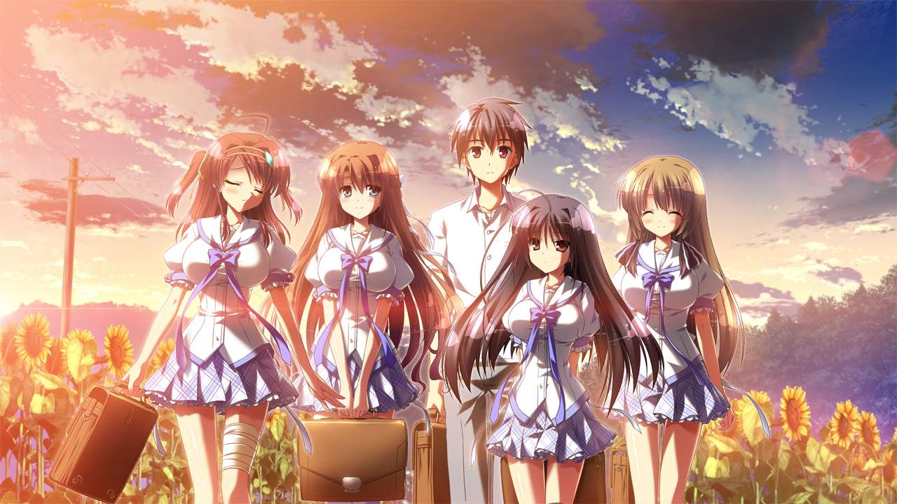

十鉴十诫
PDF下载
回到首页
序
本文主要内容为对综合水平中上且基本没有短板的“废萌”游戏以及问题过于明显以至于明明有长处但根本无力回天的“废萌”游戏做一定程度的整理。
尽管笔者已经极力克制选材范围，但本篇文章所推荐的内容仍不可避免带有极强的个人主义色彩，请读者仅供参考。
若读者觉得笔者的评价过于偏颇，请读者直接关闭本文。
本文选材内容仅限于“废萌”，不涉及全年龄游戏，不涉及纯剧情向游戏。
同时对于容易引起争议的尤其是电波系游戏予以排除，目前没有汉化的游戏也予以排除，小品作予以减分处理。
其中“十鉴”的要求为：
画风：以目前的普遍审美水平来看，至少需要有值得欣赏的地方。
剧情：不能有某条线路过于有问题，同时需要有较为出彩的线路。
人设：不能有过于影响整体观感的人设。
加分项：HS好用与否、人设出彩与否、剧情值得回味与否、配乐出众与否。
以该要求，笔者对于一些风评不错但是剧情没有过于出彩同时加分项不多的游戏予以否决， 若读者未看到自己喜欢的游戏，非常正常。
“十诫”一般为符合“十鉴”的加分项，但在剧情或者人设上有相当的硬伤所在的游戏， 通常该游戏也具有一定的话题性，可以说都是“金玉其外，败絮其中”。
请读者详细阅读以上内容后，进行后续章节的阅读。
若因错误理解笔者的意图而引起的对于笔者的不满，请关闭本文。
十鉴
美少女万華鏡
图不用放了，评价估计也不用评价了，放在这个位置已经足够了。
无论是第三部里后末世中人与机械的冲突，还是第四部中亲情与爱情的逐渐变质，都并不缺少值得回味的内容。
《美少女万華鏡》系列，是好游戏。
アオイトリ
《アオイトリ》 海野あかり
如果说ωstar是在拔作里面讲剧情，那Purple SOFTWARE就是在剧情里面玩拔作。
《アオイトリ》译名为《青鸟》，该作品取自比利时作家莫里斯·梅特林克的著名戏剧《青鸟》。
开篇就是HS，非常给力。
克的画风需要稍微适应一阵子，适应之后就会喜欢上了，请不要被火箭奶子劝退。
OP《アオイトリ》很不错。
限于篇幅，不对剧情多作阐述。同时该社的其他优秀作品，诸如《アマツツミ》(译名《天津罪》)、 《クロノクロック》(译名《克洛的时钟》)、《未来ノスタルジア》(译名《未来乡愁》)、 《クナド国記》(译名《久那土国记》)也不进行介绍了。
相关歌曲自行去Purple SOFTWARE御用歌姬橋本みゆき的歌曲里面找，都有，基本都很不错。
《ハピメア》(译名《幸福噩梦》)剧情跟裹脚布一样，又臭又长，并不非常推荐。
天結いラビリンスマイスター
《天結いラビリンスマイスター》 アヴァロ&フィア
Eushully的游戏和ALICESOFT的最大的区别在于E社多周目全继承。
没有全继承我就会觉得我这个周目白打了，所以我一直对于A社的游戏没有非常大的兴趣。
本来这个位置我是打算放《封緘のグラセスタ》(译名《封缄之都古拉塞斯塔》)的，但是魔王石收集比较恶心，多周目白灾战斗难度又比较断层。
想来想去还是《天結いラビリンスマイスター》(译名《天结迷宫大师》，又称《天结2》)更为合适，纯爱的女儿养成游戏， 由于新加入的水风馆系统省去了凹点刷星石的问题，连携系统以及玄磨系统使得很多角色不至于坐冷板凳， 而《封缄》到二周目进白灾拿到赛利卡人偶或者歪魔入队之后一周目短腿角色都可以直接下了。
但是不上修改器改钱建议去《封缄》。
这作核心是养女儿的粉丝向游戏，对养女儿不感冒的还是建议去玩《封缄》。
E社其他游戏在我的其他文章中涉及很多，不细讲了。
穢翼のユースティア
《穢翼のユースティア》 ユースティア・アストレア
八月脸就八月脸，起码当年它是真的有东西。
还是一样，剧情不细讲了。
后面做的《千の刃濤、桃花染の皇姫》和《大図書館の羊飼い》，一个设定过于混沌过于缝合怪，一个线路实在过多过水， 很难让我眼前一亮。
推荐《秽翼》的OP《Asphodelus》和《皇姬》的ED《月夜に舞う恋の花》。
お家に帰るまでがましまろです
《お家に帰るまでがましまろです》 温泉SCENE
好冲，HS很多。我找正常CG的时候在HCG里面翻了半天才翻出来没几张。
个人觉得是ま〜まれぇど最色的一作。
可惜某个小萝莉没有HS。
相比于《PRIMAL×HEARTS》两作个人线水平不均一的明显问题，这一作个人线路都非常稳定。
Strawberry Nauts -ストロベリーノーツ-
《Strawberry Nauts -ストロベリーノーツ-》 日和橙子
HOOKSOFT就两作有もとみやみつき，另外一作《PriministAr》还没汉化。
这作虽然原画分辨率就1024×576，但是质量确实不错。
男主因为学校宿舍没房然后被送到单间和一堆女孩子住之后过了一年的故事，满好感开局什么该干的都干了。
极度典型的“废萌”，而且有立绘的基本都可以推。
这作OP《a little more》和 《PriministAr》的OP《虹色の季節へ》不错。
手垢塗れの天使
《手垢塗れの天使》 ？？？
AKABEiSOFT3做的一系列小拔作之一，这作讲的是演艺圈女艺人在枕营业的浪潮中逐渐堕落的故事。
ED《Idolatry》很不错，准确来说AKABEiSOFT3御用作曲西坂恭平作了一堆很不错的曲子， 诸如《生命のスペア》的OP《Liblume》， 《はるとゆき、》的OP《ひとひらの、だいすきを、》， 《働くオトナの恋愛事情》的OP《Secret Liqueur》， 《働くオトナの恋愛事情2》的OP《Magenta Tear》。
还有一首在后续内容里介绍。
夏空のペルセウス
《夏空のペルセウス》 ALL
minori从少数派向巨乳派转变的第一作，也是柚子奈ひよ和くすはらゆい成为minori主力的第一作。
HS很多，弟弟很开心。
可惜minori还是没续上。
アストラエアの白き永遠

《アストラエアの白き永遠》 橘葉月&橘落葉
司田カズヒロ的画风比较光污染，适应不了可以不玩。
说实话真的很难挑，实在是想不出该放什么上去了。
建议先玩橘落葉线，然后就可以选择性不玩了。
原声带不错。
To Be Continued
最好的作品，永远是下一部作品。
勇敢地拥抱未知的下一作吧。
十诫
桜ひとひら恋もよう
译名有《樱舞落花恋模样》，官汉译名《樱花片落恋模样》。
我真的没想过会有正经的拿出来卖的全价作游戏能写成这种跟短暂上架过Steam的轻文做的一系列国产文字游戏一个水平。
真的是烂透了，剧情强行降智。
没有任何好评价的。
月に寄りそう乙女の作法2
《近月2》本不该获如此殊荣，但是可惜有一个《近月》。
桜小路才華想学他爹但是远不如他爹。
《月に寄りそう乙女の作法》及其衍生作这个系列，玩玩《近月》、《理论》就得了，其他的真不行。
神のラプソディ
Eushully极具代表性的烂作，虽然是唯一不需要修改器来提升游戏体验的。
至于《珊海王の円環》因为没有汉化逃过一劫。
战斗没有难度，恶心的全是在刷地图任务上。
《天冥のコンキスタ》虽然也是类似的战斗系统，但是地图任务体验好了不少，没这么脑瘫了。
白瞎了这么好的人设。
絆きらめく恋いろは
译名《牵绊闪耀的恋之伊吕波》、《共结情缘的剑舞恋曲》。
名气远大于实际内容。
除了卯衣配音的朱雀院椿，其他角色都不知道写的什么东西，尤其是表面上的女一号上和泉桜夜，有女一号的样子吗？
根本不值得。
春音アリス＊グラム
译名即片假名转写《春音Alice*Gram》。
跳票跳成常态的NanaWind的烂作。
纯靠卖画卖人设，剧情又臭又长还没东西。
FD又他妈封面欺诈，还他妈把本篇共通线塞了进去占空间。
怎么他妈的还没倒闭啊？
俺の姿が、透明に！？ 不可視の薬（インビジブル）と数奇な運命
译名《不可视之药与坎坷的命运》，简称《透明药》。
Hulotte的各种奇怪的超自然R18设定加上一潭死水的剧情本来不应该有如此评价。
但是很可惜这作犯病犯得非常离谱，近江谷宥都写不出这种东西。
池上茜也不能拔，这剧情也萌不起来，总而言之非常失败，和其他Hulotte的作品相比差了一个档次。
11月のアルカディア
印象曲《かすみ草のゆめ》很不错，但是也仅止于此了。
男主智商实在是过于有问题，精心准备的计划就是个笑话。
结果最后把妹妹救回来了还没有HS。
听听歌得了，没有对比就没有伤害。
ネコ神さまと、ななつぼし -妹の姉-
译名《猫神大人与七颗星星》。
奈々原風子不能推，还从头到尾都在瞎搞和嘴臭。
都不知道写的什么东西。
突出一个莫名其妙。
できない私が、くり返す。
译名《若能与你再次相见》，因为女主泉詩乃第一次出现和苹果有关，又称《苹果妹》。
OP《Re:Call》不错，除此之外只能说非常可惜。
可惜在我根本不知道这堆女人脑子里面到底在想些什么。
脑子里面一定都带点病，完全配不起这么好的风评。
我真的不知道男主靠怀表这么循环来循环去有什么意义，到底循环了什么东西。
It Should Be An END
结语
“十诫”中最后一个subsection是空的，是故意为之。
希望读者们的游戏生涯中，没有值得填进去的作品。
有不少在某些地方有所欠缺的作品落选了，非常可惜，不然《キサラギGOLD★STAR》之流一定不能豁免，而《黄昏のシンセミア》也该写上浓墨重彩的一笔。
只不过我的数理基础大概也许并不是很好就是了，连九和十哪个大都算不清楚。